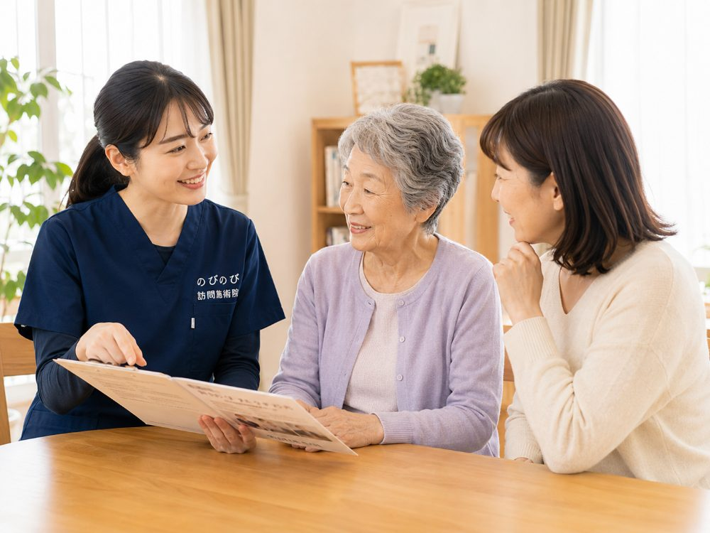

「平日は家族が仕事で立ち会えない」「日中はデイサービスに行っている」。こうした事情から、土日や夕方以降に受けられるのかを気にされる方は多くいます。訪問鍼灸マッサージは施術者がご自宅を回る形なので、通院型より曜日や時間帯を家庭の都合に合わせやすいのが利点です。何曜日・何時ごろ対応できるかは地域や予約の状況によりますが、まずはご希望を聞かせていただければ調整の相談ができます。
この記事のポイント
のびのびでは平日の9時から18時までにうかがい、ご家庭や施設の都合に合わせて曜日と時間を決め、定期的に決まった曜日でうかがいます。土日祝はお休みで、うかがえるのは平日の9時から18時までです。料金は保険にもとづく決まった額で、受ける曜日や時間帯で変わりません。自宅で1名が受けた場合の目安は総額3,950円、1割負担の方で1回約395円です。デイやヘルパーの時間と重ならないよう組み立て、独居の方でも受けていただけます。
対応時間の基本的な考え方
のびのびがうかがうのは平日の9時から18時までです。決まった施術所へ通っていただくのではなく、施術者がご自宅や施設まで足を運ぶ形なので、ご本人の体調がよい時間帯や、ご家族が立ち会える曜日に合わせて予定を組めます。日によって体の調子は変わりますから、その日の状態を見ながら進めます。
多くの方は、決まった曜日・時間に定期的にうかがう形で続けておられます。毎週同じリズムで来ることで、生活の予定にも組み込みやすく、体調の移り変わりにも気づきやすくなります。初回にご希望をうかがい、無理のない予定を一緒に決めていきます。
何時から何時まで来てもらえる？
対応できる時間帯は、平日の9時から18時までです。何時ごろにうかがえるかは、その地域を回る順番や、ほかのご家庭の予約状況によって決まります。ですから「この時間なら必ず」とお約束するより、ご希望の時間帯をいくつか聞かせていただき、そのなかで組めるところをご案内する形が現実的です。
1回の施術にかかる時間は、体の状態や当日の内容によりますが、着替えや移動を含めておおむね30分前後を見ておくと予定が立てやすいです。前後に別のご家庭を回ることもあるため、到着時刻は多少前後します。急ぎの用事がある日は、その旨を先にお伝えいただければ配慮します。
土日・祝日はお休みです
平日はご家族が仕事で、立ち会いや相談ができるのは土日だけ、というご家庭は少なくありません。のびのびがうかがえるのは平日だけです。土曜・日曜・祝日はお休みをいただいています。施術者が体をこわさず長く続けられるように、休みをきちんと取る形にしているためです。ご期待に沿えず申し訳ありません。
ただ、平日に立ち会えないからといって、受けられないわけではありません。ご本人おひとりのところへうかがう形で続けておられる方はたくさんいます。その日の体の様子は記録に残し、ご希望があればご家族へお伝えします。電話やメールでのやりとりもできますので、立ち会えない日が続いても、状態が分からないままにはなりません。初回だけは立ち会っていただけると、目標やご希望をうかがいやすくなります。半休や介護休暇を使える日に合わせてお取りすることもできますので、ご相談ください。
夕方や夜間はどうか
うかがえるのは9時から18時までで、夜間の訪問は行っていません。ご家族の帰宅が夜になるご家庭では、立ち会っていただくのはむずかしいことになります。
日中はデイサービスに出ている、という方の場合は、通所のない曜日に組むのが基本です。週2回デイに行っておられるなら、残りの3日から選ぶ形になります。夕方をご希望の場合、17時台であればお取りできることもありますが、その日に回る順番によりますので、確約はできません。ご希望の時間をいくつか聞かせていただいたうえで、組める日をお出しします。
料金は曜日や時間帯で変わりません
保険を使う訪問鍼灸マッサージの料金は、公的な医療保険にもとづく決まった額です。受ける曜日や時間帯によって料金が上下することはありません。自宅で1名が受けた場合の目安は総額3,950円、1割負担の方で1回約395円です。特別な割引ではなく、正規の料金でそのまま受けていただけます。
別途の出張費（出張料・交通費）はかからず、エリア内はどこにうかがっても同額です。お支払いは月ごとにまとめてお願いしています。内訳はあとからでも確認できます。この費用は医療保険で計算するため、介護保険の区分支給限度額とは別枠で、ケアプランの上限を圧迫しません。効果には個人差があります。
予約と、日程の変更・キャンセル
予約は、決まった曜日・時間を確保して定期的にうかがう形が基本です。体調のすぐれない日や、急な用事が入ったときには、日程の変更もご相談いただけます。無理に予定どおり受ける必要はありませんので、その日の体調に合わせて柔軟に調整します。
都合が悪くなった場合は、わかった時点で早めにご連絡ください。別の日に振り替えるか、その週はお休みにするかを一緒に決められます。継続のペースや時間帯も、続けるなかで見直していけますので、最初にきっちり固めきる必要はありません。
急な体調変化があったときは
訪問の日に熱が出た、いつもと様子が違う、という場合は、施術を無理に行わず見合わせる判断をします。当日でも構いませんので、気づいた時点でご連絡ください。受けるかどうか迷うときも、状況を聞かせていただければ一緒に判断します。
施術後に気になる変化があったときの連絡のしかたも、あらかじめ相談して決めておけます。遠方に住むご家族へ、その日の様子を電話やメモでお伝えすることもできますので、離れて暮らしていても状態を把握していただけます。かかりつけの医療機関との連携が必要な場面では、その橋渡しも相談に応じます。
デイサービスや通院、ヘルパーの予定と組み合わせるには
デイサービスや通所リハビリに通っている方、定期的に通院している方は、それらと重ならない曜日・時間にうかがえるよう調整します。ヘルパーの訪問時間とも重ならないように組めば、一日のなかで支援が偏らず、落ち着いて施術を受けていただけます。「デイのない曜日の午後に」「通院の翌日は避けて」といったご希望にも、できる範囲でお応えします。
ほかのサービスと組み合わせることで、一週間のなかで体の様子を見てもらえる機会が増え、体調の変化に気づきやすくなる利点もあります。ケアマネジャーがついている方は、ケアプラン全体のなかでの位置づけも一緒に考えられますので、遠慮なくご相談ください。施設にお住まいの方は、施設側の生活時間に合わせて調整します。
立ち会いが難しいご家庭・お一人暮らしでも
ご家族が毎回立ち会えなくても、施術を受けていただけます。初回はできるだけ同席いただき、体の状態やご希望を共有できると安心ですが、その後は鍵の受け渡しの方法や、施術後の様子の報告のしかたなどを相談しながら、ご家庭に合った形を整えます。
お一人暮らしの方でも、無理なく受けていただけるよう配慮します。決まった曜日に人が訪ねてくること自体が、体調を定期的に見てもらう機会になり、変化に早く気づくきっかけにもなります。離れて暮らすご家族に様子をお伝えする方法も、あわせて決めておけます。
始めるまでの流れ
まずはお電話などでご連絡いただき、ご希望の曜日・時間帯、ご家族の立ち会いの状況、通院の様子、かかりつけの医療機関を聞かせてください。対応できる曜日・時間をご案内しながら、無理のない予定を一緒に組んでいきます。お住まいが対応エリアかどうかも、その場でお答えできます。
保険を使うには医師の同意書が必要です。書類の準備や医療機関とのやり取りはのびのびが引き受けますので、はじめての方でも進めやすいと思います。国家資格をもつはり師・きゅう師がうかがい、鍼やお灸に加えて、手技や機能訓練のケアも組み合わせます。これらに追加の料金はかかりません。ご不明な点は、始める前に何でもお尋ねください。
よくある質問
土日や祝日も来てもらえますか？
申し訳ありませんが、のびのびは平日のみで、土日祝はお休みをいただいています。平日に立ち会えないご家庭では、ご本人おひとりのところへうかがい、その日の様子を記録に残してご家族へお伝えする形で続けておられる方が多いです。
夜間や夕方も対応できますか？
うかがえるのは9時から18時までです。夜間の訪問は行っていません。夕方は17時台であればお取りできることもありますが、その日に回る順番によります。
何時から何時まで対応していますか？
日中を中心に組んでおり、到着時刻は回る順番や予約状況で前後します。1回はおおむね30分前後が目安です。「この時間に来てほしい」というご希望があれば、そのなかで組めるところをご案内します。
時間帯によって料金は変わりますか？
曜日や時間帯で料金が変わることはありません。自宅で1名が受けた場合、総額3,950円、1割負担の方で1回約395円が目安です。別途の出張費もかからず、エリア内は同額です。
予約の変更やキャンセルはできますか？
できます。体調のすぐれない日や急な用事のときは、わかった時点で早めにご連絡いただければ、別の日への振り替えかお休みかを一緒に決められます。無理に予定どおり受ける必要はありません。
当日に体調が悪くなったらどうすればいいですか？
無理に施術は行わず、見合わせる判断をします。当日でも構いませんので、様子がいつもと違うと感じた時点でご連絡ください。受けるか迷うときも、状況を聞かせていただければ一緒に判断します。
家族が立ち会えなくても受けられますか？
受けられます。鍵の受け渡しや施術後の報告のしかたを相談しながら、ご家庭に合った形を整えます。お一人暮らしの方にも配慮しますので、始める前に気になる点を確かめていただけます。
デイサービスやヘルパーの時間と重なりませんか？
重ならない曜日・時間に調整します。通院やデイのない日を選ぶこともできますし、ケアマネジャーがついている方は、ケアプラン全体のなかでの位置づけも一緒に考えられます。